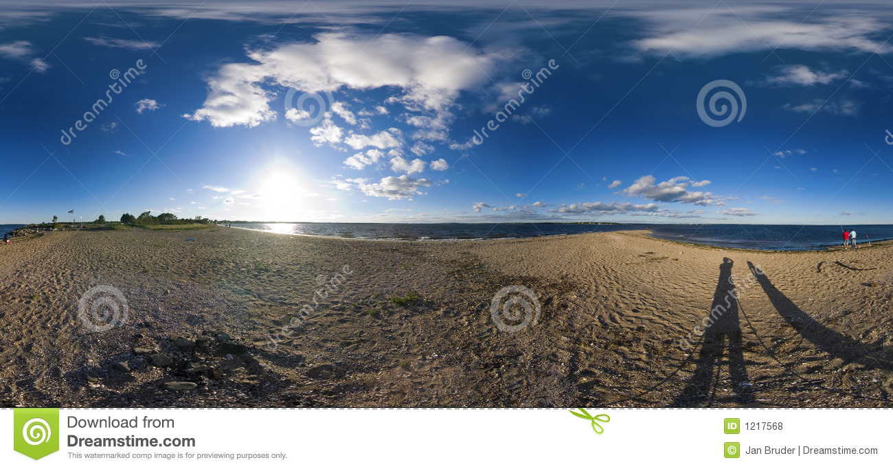

<html>
     <script src="../aframe/aframe.min.js"></script>
     <a-scene>
             <a-assets>
              
              
              <video id="tsunami" autoplay loop="true" src="Tsunami.mp4"> </video>
              <video id="resident" autoplay loop="true" src="Resident_Evil_Gun_Choreography_-002.mkv"> </video>
              <!--<a-asset-item id="tree" src="scene.gltf"></a-asset-item>-->
              <a-asset-item id="tree" src="scene.gltf"></a-asset-item>
             </a-assets>
             <!--<a-sky src="#sky"></a-sky>-->
             <a-videosphere src="#tsunami"></a-videosphere>
             <a-video src="#resident" width="16" height="9" position="0 7 -20"></a-video>
             <!--<a-gltf-model src="#tree" position="2 5 -3"></a-gltf-model>-->
             <a-gltf-model src="#tree" position="0.5 1 -1" scale="1 1 1"></a-gltf-model>
             <a-torus position="-2 1 -5" color="green" radius="1.2" src="hiro.jpg"></a-torus>
             <a-plane width="7" height="7" rotation="50 0 0" position="-2 -2 -5" color="purple"></a-plane>
             <a-cylinder color="yellow" height="2" radius="0.05" position="-2 -1 -5"></a-cylinder>
             <a-cylinder color="blue" height="2" radius="0.05" position="-3 -1 -5"></a-cylinder>
             <a-torus-knot color="orange" radius="1.2" position="-3 1 -5"></a-torus-knot>
             <a-plane width="9" height="2" position="3 1 -9" src="#plant" color="orange"></a-plane>
             <a-text value="Welcome to browser's VR" color="white" width="10" position="-0.5 1 -6"></a-text>   
     </a-scene>
</html>
